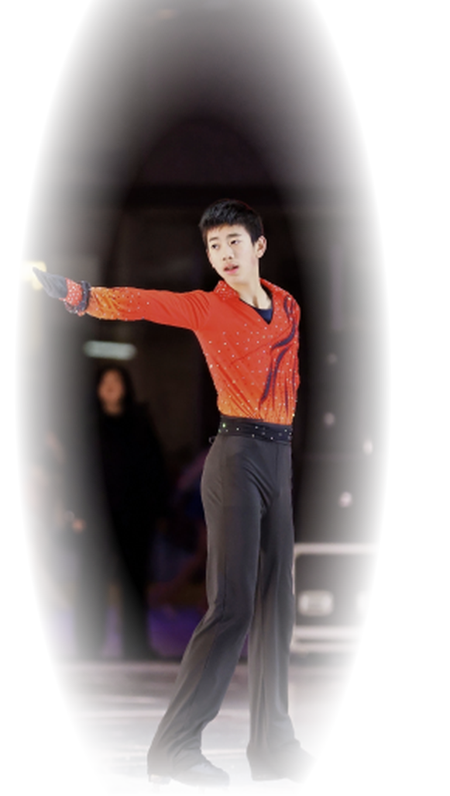
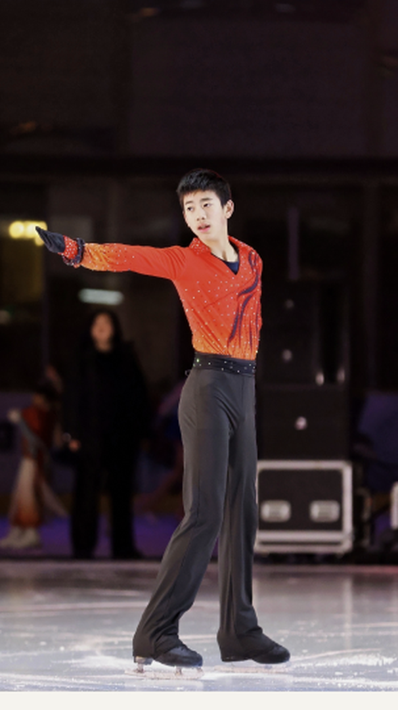

Grade 9 student, figure skater, and creative learner.
I enjoy learning through practice and creating projects that let me explore new ideas.
I can help you withI’m Ethan Li, a Grade 9 student who enjoys figure skating, video games, and creative projects. I learn best by doing, practicing, and improving over time.
I chose this project because figure skating has been part of my life for several years. It represents patience, focus, and the kind of progress that only comes from repeating, correcting, and trying again.
The outcome is more than a skating skill. I became more patient and persistent, and I learned to see improvement as something built over time.
My training is built around regular practice, repetition, and correction. Some skills improve quickly, while others take much longer to become stable.
The most important part of this project is the change over time. Photos, practice moments, and visible improvement help show that progress.

This Science PA turned a simple idea into a complete short animation. We built the setting ourselves, used dolls as characters, and photographed the scene step by step before editing everything together.
I focused on editing the film and helping turn many individual images into a smooth sequence that made sense as one complete animation.
The handmade sets, characters, and editing process are the parts worth seeing because they show how much planning happens behind a very short finished video.
The final film brought our ideas together and showed me how much patience, teamwork, and attention to detail are needed to make animation work.
Add a concise introduction here that explains what the Laser Cutting project was and why it matters to you.
Add what you personally worked on and the main part of the process you were responsible for.
Add the strongest visual, experiment, prototype, or detail that helps visitors understand why the project is interesting.
Add the final result and what you learned or improved through the project.